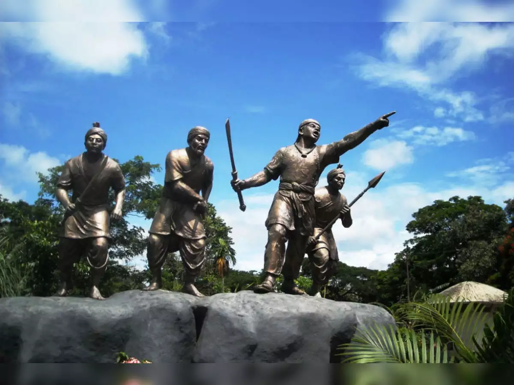

Sivasagar,formerly known as rangpur,was the capital of Ahom kingdom
from 1699 to 1788.After some time the capital was sifted to
Gorgaon,a place closer to sivasagar.The Sivasagar was established by
Ahoms. Before the arrival of Ahoms, the area under the district was
inhabited by the indigenous Tibeto-Burman tribes like Borahis and
Morans.During the reign of Gaurinath singha a battle was fought
against the moamariya rebels on the vicnity of the sivasagar
tank.later on the capital was sifted to jorhat from gorgaon for
safrty purposes.
Before the British period, the center of administration of Assam was
around Sivasagar were the famous Ahoms ruled for nearly six hundred
years. The Ahom kings took keen interest in building different
temples, dedicated to various deities and which were usually flanked
by large tanks which until today stand out as memorials to their
glory in the district.[1] Sivasagar, or Rangpur as it was known
then, was the capital of the Ahom Kingdom from 1699 to 1788. The
famous Joysagar Tank was excavated within 45 days by Rudra Singha
(1696-1714) in memory of his mother Joymoti Konwari. The Joy Dol is
situated on the bank of the Joysagar Tank. Pramatta Singha
(1744-1751) built the Ranghar with bricks in 1745. Gaurisagar Tank
is situated at a distance of about eight miles from Sivasagar town.
The Sivasagar Tank was excavated by queen Ambika Devi in 1733.
The province was conquered by the british in 1825 and was completely
annexed in 1826.For administrative purposes , it was divided into
three sub divisions.

The Siva Dol, Vishnu Dol and Devi Dol are situated on the bank of the
Sivasagar Tank. Rajeshwar Singha (1751-1769) built the Kareng Ghar in
Gargaon. Charaideo , about 28 kilometers away from Sivasagar is famous
for a cluster of Maidams, the Ahom age tumuli. Sukapha, the first Ahom
king , constructed his capital at Charaideo in 1253. Sivasagar was
earlier known as Rangpur and Rangpur was earlier known as Metek a. The
original name of Sivasagar district was Sibpur. On February 24, 1826,
the treaty of Yandaboo consolidated the British occupation of Assam.
This treaty of Yandaboo brought an end to the roughly six hundred year
long Ahom rule in Assam. After the 1826 treaty, the British government
in Assam incorporated a number of administrative changes such as the
formation of districts. The Sivasagar district was created after the
annexation of Purandar Singha’s dominion of upper Assam in 1839. The
Sadar headquarter of Sivasagar was transferred to Jorhat in 1912–13. The
undivided old Sivasagar district comprised three subdivisions , namely
Sivasagar, Jorhat and Golaghat. In 1983, the Sivasagar district was
reorganized to carve out the Jorhat district. It was further divided on
15 August 1987 for the creation of the Golaghat district.
The province was conquered by the british in 1825 and was completely
annexed in 1826.For administrative purposes , it was divided into three
sub divisions.